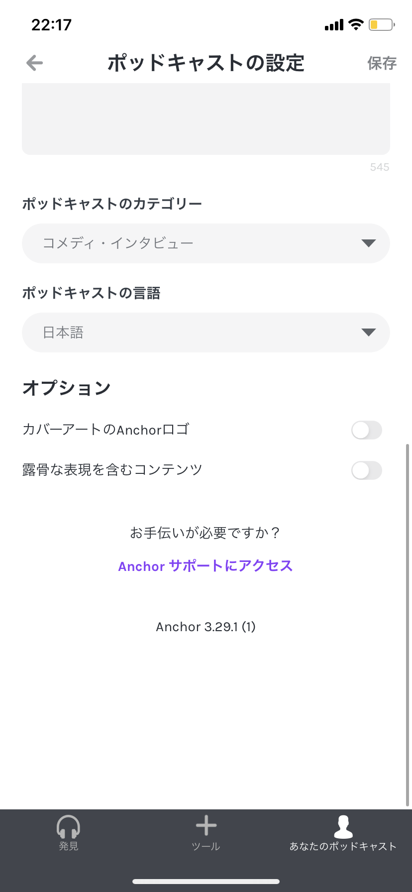
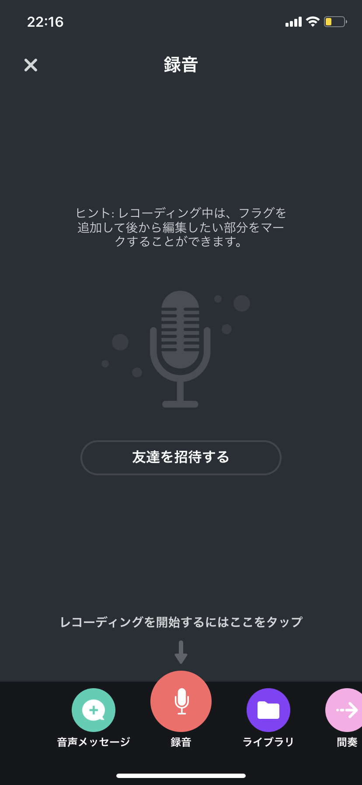

会社概要
✒︎2020
最新更新年
▶︎知っておきたいPodcastについて
はじめまして。キリンとパスタ（特にカルボナーラ）が好きな絵描き男子、寺越いっぺいと申します。
Podcastは2005年頃からスタートした、音声を中心とする配信サービスです。
YouTubeの音声版（正確には全く違うものですが）と思って貰えれば理解しやすいかと思います(*´꒳`*)ﾆｺ
2005年からサービスが開始されており、バナナマンさんやサンドウィッチマンさんなど著名人も多く番組を配信しています。
ポッドキャストの配信は面倒なことが多いので嫌厭されがちですが、今回は誰でも簡単にポッドキャストを配信できるAPPを紹介します( *｀ω´)！なので、この機会に是非みなさんも自分の番組を立ち上げてみて下さいね。
▶︎ポッドキャスト配信アプル「Anker」の使い方
▶︎番組を作る前に、配信者のプロフィールを設定

Ankerを起動できたら「Profile」タップして、写真や番組名、説明などを入力。
どうですか？簡単ですよね(*´ー｀*)！
これでプロフィールが作成されたはずです。
▶︎番組を収録する

こんな画面が出てきたら後は収録するだけです。
何やらボタンが並んでいますが、左から順番に説明していきますね(*´꒳`*)
緑のボタンは、番組を配信して、リスナーからボイスメッセージをもらうことができるボタンです。番組にマッシュアップも可能で、リスナーとの交流をより深める事ができます。
紫のボタンは、最大10人まで番組に参加する事ができるボタンです。
青のボタンは「Apple Music」に加入していれば、そこから曲を挿入できます。著作権には注意が必要なので気をつけてください。
桃色のボタンは、効果音を挿入できるボタンです。どんパフ！みたいに。
赤色のボタンはマイクの絵が示す通り、長押しすることで録音する事ができます。
▶︎配信しよう
収録の順番などを並べ替え、鉛筆アイコンをクリックして、「Edit this episode」をクリック。
トグルボタンをオンにしておくと、AppleのPodcastアプリにもエピソードを配信可能。
完了したら「Publish this episode」をクリック。これで配信完了です。
超簡単に番組を制作できましたね･:*+.\(( °ω° ))/.:+
▶︎番組を配信したら
Web内でブログサイトを立ち上げたりしなければならず、本格敵にやるとけっこう難しかったりしますが、こういった便利なアプリを使っても配信は可能なのでぜひAPPをダウンロードして番組をはじめてみてはいかがでしょうか(*⁰▿⁰*)？
より詳しく知りたい方や、質問などがある方は「contact」のメッセージフォームより気軽にお問い合わせください。
ではまた（´-`）.｡oO！